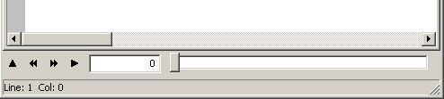
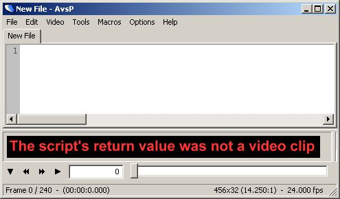
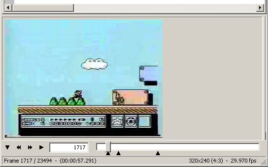
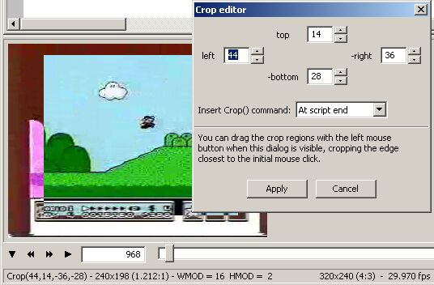
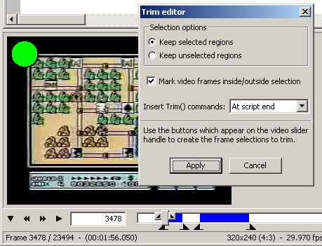
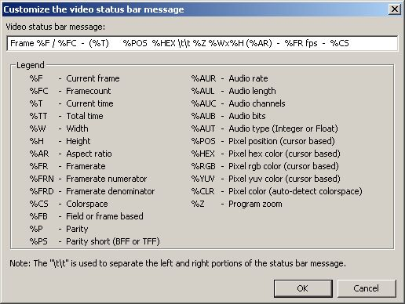

- home
- >
- Video Features
Video FeaturesThe basicsOnce you have written an AviSynth script, you can see the results using the built-in video preview. AvsP's video preview offers many unique features which makes the program ideal for creating AviSynth scripts. The video toolbar
The video toolbar exists near the bottom of the AvsP window. The controls are more or less self-explanatory - the first button shows or hides the video preview, the second button decreases the video frame position by one, the third button increases the video frame position by one, and the fourth button activates the external preview. The adjacent text box allows you to jump to a specific frame directly, just type in a number and hit enter. You can also type in a time, using the "hr:min:sec" format. You can quickly access this text box using the keyboard shortcut Ctrl+G. The slider bar represents the video frame position, you can jump to any frame simply by dragging the slider and releasing. (Note: by default, when you drag the slider bar, the video does not update until you release the slider. You can change this behavior to update constantly while dragging in the "Options -> Program settings..." dialog under the "Video 1" tab.) Showing the previewThere are several ways to show the video preview:
Perhaps the easiest to remember and use is the toggle button, but you should also be aware that nearly every control on the on the video toolbar will show the preview if it is hidden. When you activate the preview, AvsP copies the text in the current tab and creates a temporary AviSynth script named "preview.avs" in an appropriate directory. This allows you to preview your script without requiring you to save the changes. You can always show the video preview, even if your script isn't complete. For example, if you activate the preview with no text in the script at all, you get this result: 
This is AviSynth's way of dealing with syntax errors - it outputs a video with the error message written on each frame. In this way, it's always possible to preview your script, despite syntax errors, missing files, etc. The size of this video subwindow can be adjusted by left-clicking and dragging the horizontal bar separating the script and video subwindows. This is useful for large videos which cover up too much of the script. If you reduce the size of the video subwindow such that the entire video frame is not visible, scrollbars will automatically appear to allow you to scroll to any section of the video. You can left-click and drag the video to scroll to different sections as well (similar to a pdf). To restore the size to fit the height of the video, simply double-click the bar. Notice that the program's status bar now shows information about the video - the frame, time, width, height, framerate, etc. When the video preview is visible, the program essentially has two modes - the text mode and the video mode. In the video mode, keyboard shortcuts work slightly differently. For example, pressing the right arrow key in video mode increases the video frame position by one. Holding down the right arrow key increases frames repeatedly, essentially playing the video (although not at the correct framerate). If you click the text area, AvsP switches to text mode, now the right arrow key controls the cursor as you would expect in a normal text editor. To switch back to video mode, left-click anywhere on the video preview (you'll see the status bar message change), or refresh the preview using any of the available methods. You can switch between the two modes quickly using the Video -> Switch video/text focus command, using the associated keyboard shortcut Shift+Tab. To hide the preview, you can do any of the following:
(Note that the video preview's right-click menu is identical to the program's Video menu.) Also, if you switch text tabs, the video preview will automatically be hidden if the video properties of the script in the new tab does not match the previous properties - in other words, the width, height, and framecount between the two videos must match or else the video preview will be hidden. You can make the video preview a separate window in the "Options -> Program settings..." dialog, in the "Video 1" tab. This is useful for people with large monitors or multi-monitor setups. External previewThe external preview feature lets you to see your script play back in real-time in your favorite media player. You can activate the video preview using any of the following ways:
(Note that the video preview's right-click menu is identical to the program's Video menu.) The first time you use the external preview feature, AvsP will show a dialog box which allows you to select your media player. You can always go back and choose a different player from the "Options -> Program settings..." dialog, in the "General" tab. Video navigationAvsP provides plenty of methods and shortcuts to navigate through the video. The most obvious method is the toolbar slider, which allows you to quickly change the video's position using the mouse. The frame text box is a good way to precisely jump to a specific frame or time, just enter a frame number or time in the "hr:min:sec" format and hit enter (you can quickly access the text box with the keyboard shortcut Ctrl+G). Keyboard shortcutsAvsP also provides a number of useful keyboard shortcuts for video navigation. When the program is in video mode, the following shortcuts are available:
Note that the number of frames which corresponds to a second or a minute depends on the video's framerate - AvsP does all the appropriate calculations for you. Also note that you don't need to memorize these shortcuts, you can always check them out in the video preview's right-click menu. These keyboard shortcuts come in handy when you need to quickly scan through a video for scene changes, filter effects, etc. Bookmark framesThe bookmark frames feature allows you to keep track of any number of frame positions, avoiding the need to manually copy and paste scraps of text. When you are on a frame you wish to bookmark, click the "Video -> Bookmark this frame" menu item (keyboard shortcut Ctrl+B), or simply right-click the video slider handle (the handle is the small rectangle which you drag around). When you create a bookmark, a black triangle appears directly underneath the slider. Here's a picture of AvsP with three bookmarks set: 
In order to go to one of the bookmarked frames, simply left-click on one of the black triangles. Nice! You can see a list of all the bookmarked frames in "Video -> Navigate -> Go to bookmark" menu. Clicking on a particular bookmark will jump to that frame as well. You can also use the commands "Video -> Navigate -> Next bookmark" and "Video -> Navigate -> Previous bookmark" (keyboard shortcuts F2 and Shift+F2, respectively) in order to quickly jump from one bookmark to the next. In order to delete a bookmark, you can either middle-click the black triangle, or you can go to the bookmark and set it again (in other words, setting a bookmark toggles it between on and off). You can get rid of all bookmarks quickly using the "Video -> Clear all bookmarks" option. Comparing multiple scriptsOne of the features of AvsP that is hard to appreciate at first glance is its seamless ability to compare the video output of multiple AviSynth scripts. By having a tabbed text editor with a single attached video preview, AvsP takes the window management out of script comparisons. For example, let's say you were working on a script using a complex set of filters. You preview its video and are not pleased with the result - too much loss of detail, or the colors are dulled, etc. Simply copy the script into a new tab, delete any filters you think might be causing the problem, then preview the script. Now when you switch between the two tabs, you can very easily see what the effects of those filters were on the video. Switching between tabsBecause this type of comparison is such an important part of video editing, AvsP offers several shortcuts to help switch between tabs when comparing video outputs, listed here:
It's important to note that when you switch tabs, if the video properties of the script (width, height, and framecount) at the new tab do not match the previous video properties, the video preview is automatically hidden. This makes it difficult to compare two similar scripts if a non-similar script is in between. To solve this problem, the mouse scrolling shortcut skips over any non-similar tabs. In other words, by scrolling the mouse wheel down (or up) once, AvsP will find the next (or previous) tab that has similar video properties and switch to it (in video mode only). The keyboard shortcuts ~, 1, 2, 3, etc. correspond to the zero-based position of the tab, where ~ corresponds with the zeroth tab. In other words, if there are three open tabs, pressing the ~ key selects the first tab, pressing the 1 key selects the second tab, and pressing the 2 key selects the third tab (again, note that this is in video mode only). Copying scriptsUsing multiple tabs to compare filter chains generally requires you to copy a script and paste it into one or more new tabs. Since this is a relatively common operation, there are a couple of shortcuts AvsP provides for this operation. First let's look at the different ways to create a new tab:
An important fact to note is that when creating a new tab using the first or second method, AvsP will copy any selected text from the script in the current tab and paste it into the script in the new tab. So you could copy a script into a new tab using the keyboard sequence Ctrl+A followed by Ctrl+N. The last method mentioned, double-clicking one of the existing tabs, will create a new tab with the entire contents of the double-clicked tab pasted into the new tab, regardless of what text was highlighted. This method is easy to remember and avoids having to lose any text selections you may have wished to keep. Further approachesSometimes you may find that using multiple scripts for video comparison is not the best approach. This is particularly true when you wish to determine the effect of different values for a specific filter. Instead of using multiple script comparisons, you should use user sliders, an advanced video comparison technique unique to AvsP. The quick rule of thumb to remember is that for comparing filter chains, use multiple tabs, for comparing filter strengths, use user sliders. MiscellaneousHere are a couple more video-related features which fall into the miscellaneous category. Crop editorCropping a video is one of the more difficult operations in AviSynth. This is because when you crop a video, you need to see what you are cutting out as well as what's being kept. AvsP provides a handy crop editor which works with the video preview to let you fine tune your crop values before actually applying the crop filter. You can activate the crop editor from the menu command "Video -> Crop editor". This is what it looks like in action: 
The crop editor shows up as a separate dialog box. From the dialog box, you can enter crop values in pixels for each edge you wish to crop. You can also go directly to the video preview and drag the crop regions directly by using the left mouse button for quicker adjustments. The crop regions show up on the video with inverted colors - the non-inverted region of the frame is what will be left after the crop operation is completed. Note that the program's status bar message changes when the crop editor is active. It shows the AviSynth crop values corresponding with the cropped regions (in other words, this is the text that will be inserted into the script if you click OK on the crop editor dialog). It also shows the resulting video width and height, the corresponding aspect ratio, and the width and height modulo values. The modulo information is essential because many video formats require the width and height to have specific modulo values. When you are done creating the crop regions, click on "Apply" to finish the operation. The drop-down box labeled "Insert Crop() command:" gives you three different options: insert at the end of the script, insert at the current script cursor position, or copy the Crop() command to the clipboard (without inserting anything into the script). Most of the time you'll want to use the the first option, since the Crop() command may not make complete sense placed in an earlier part of the script, but the other options are available if you have the need. Trim selection editorTrimming video is fairly straightforward in AviSynth with the Trim() command. However, it can get a bit unwieldy when you are trying to trim several sections of video (for example, cutting out commercials from a tv recording). AvsP provides a trim selection editor to simplify this task. You can activate the trim selection editor from the menu command "Video -> Trim selection editor -> Show trim selection editor". This is what it looks like: 
Similar to the crop editor, the trim selection editor shows up as a separate dialog box. When this dialog box is visible, extra buttons appear on the video slider handle, a left arrow button and a right arrow button. Left-clicking on these buttons allow you to specify selection startpoints and endpoints for trimming. You can alternatively create selection startpoints and endpoints using the menu commands "Video -> Trim selection editor -> Set selection startpoint" and "Video -> Trim selection editor -> Set selection endpoint". Startpoints and endpoints show up underneath the video slider like video bookmarks - you can left-click a startpoint or endpoint to jump to that frame, middle-click to delete, etc. A selection shows up on the video slider as a blue region. Notice from the screenshot that you can create multiple selections. One thing to note is that it is possible to create invalid selections - for example, two startpoints but only one endpoint. You don't need to worry about keeping track of things, just know that the blue regions on the video slider will be the selections used when trimming, regardless of how many extraneous invalid startpoints or endpoints exist. You can choose to either keep the selected regions or keep the unselected regions (ie, cut out the selected regions) by choosing the appropriate option on the trim selection dialog. Also notice in the screenshot the green circle on the upper corner of the video. This circle represents whether or not the current frame will remain after performing the trim operation - green means it will remain, red means it will get cut out. This helps to ensure that you don't accidentally cut out good frames (or keep bad ones), since it can get confusing, especially with startpoints and endpoints. If it turns out that the circle is getting in the way of something you need to see on the video, you can get rid of it by unchecking the "Mark video frames inside/outside selection" option on the trim selection dialog. When you are done creating the trim selections, click on "Apply" to finish the operation. AvsP will then create a sequence of Trim() commands based on your selections. Similar to the crop editor, the "Insert Trim() commands:" drop-down box gives you the choice to insert the trims at the end of the script, at the script cursor, or to the clipboard. If you choose either of the first two options, the trim commands will be inserted into the script and the video will be refreshed, showing the newly trimmed video. Furthermore, new bookmarks will be created automatically on the frames where selections were removed, which helps to quickly check out the new transitions. Also, any bookmarks that existed before trimming are updated if they changed position due to frame removal. ZoomAvsP allows you to zoom the video preview by fixed multiples (x2, x3, x4, etc). You can access this feature from the menu command "Video -> Zoom". The zoom affects all video previews, regardless of which tab you select. You can also choose the option "Video -> Zoom -> Fill window", which will resize the video to fit the height of the preview subwindow, or the option "Video -> Zoom -> Fit inside window", which will resize the video to always fit within the preview window. Whenever the video is at a zoom of anything besides 100% (normal), there will be a small white triangle next to the upper left corner of the video. This exists to remind you that the video is being resized, which may be undesirable when you are trying to compare the effects of different video filters. Customizing status bar messageWhenever the video window is visible and has focus, the program's status bar shows information related to the current video. You can customize this message from "Options -> Program settings... -> Video 1 -> Customize video status bar...". By clicking this button, the following dialog box will appear: 
To create a custom message, simply modify the text in the dialog box. The legend shows all the different variables you can use when customizing the message - these variables get replaced with the video's appropriate values when the program is running. Note that the status bar consists of a left portion and a right portion - these portions are separated by a "\t\t" as you can see in the example. Also note that you'll need a recent version of AviSynth installed to take advantage of some of these variables - if you find that some variables aren't showing up correctly in the status bar, try installing the latest version of AviSynth. Save an imageAvsP provides a quick way to save an individual image from a video. To save the currently displayed frame, simply use the menu command "Video -> Save image as..." (note that the video preview's right-click menu is identical to the program's Video menu). You will be prompted for a place to save the file with a dialog box. You can save the image with a variety of formats (.bmp, .jpg, .png). Note that any inverted colors created by the crop editor will not be saved as part of the image file. Line-by-line video updateAvsP has an available option where the program refreshes the video preview as you type in your script automatically. This option is turned off by default, you can turn it on from "Options -> Enable line-by-line update". When this option is turned on, the video preview gets automatically refreshed every time the text cursor changes line position. In this way you could create your script without ever having to manually refresh the video preview. Of course, it's entirely possible to encounter AviSynth error videos if the portion of the script you are working on spans several lines, but this tends to be the exception case rather than the rule when working with AviSynth. Paranoia modeAlthough AviSynth itself is a very stable program, occasionally you will work with AviSynth external filters that are not entirely stable. When you preview your video with unstable filters, you can cause AviSynth to crash. When this happens, AvsP will shut down abruptly. This is a very undesirable situation, because you'll lose any unsaved changes in your scripts as a result of this crash. In order to prevent this situation, you can enable the "paranoia mode" from "Options -> Enable paranoia mode". When this mode is enabled, AvsP will save the current session every time before you preview a video. In this way, if AviSynth crashes and AvsP shuts down, the next time you load up AvsP all your work will still be there. Of course, this adds a bit of unnecessary overhead to video previewing if you only work with stable filters, but you should enable the paranoia mode if you, well, if you're a paranoid kind of person. |
|